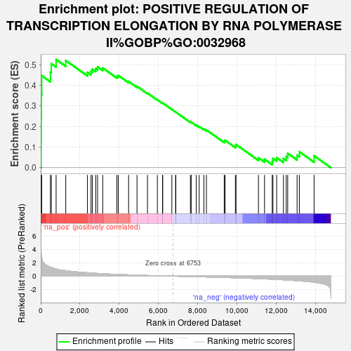
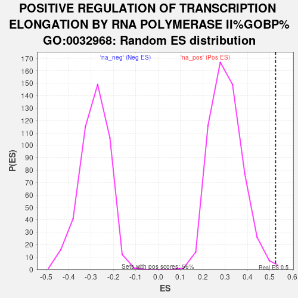

| | | Dataset | er_ranks |
| Phenotype | NoPhenotypeAvailable |
| Upregulated in class | na_pos |
| GeneSet | POSITIVE REGULATION OF TRANSCRIPTION ELONGATION BY RNA POLYMERASE II%GOBP%GO:0032968 |
| Enrichment Score (ES) | 0.52528954 |
| Normalized Enrichment Score (NES) | 1.72423 |
| Nominal p-value | 0.0035778175 |
| FDR q-value | 1.0 |
| FWER p-Value | 1.0 |
Table: GSEA Results Summary

Fig 1: Enrichment plot: POSITIVE REGULATION OF TRANSCRIPTION ELONGATION BY RNA POLYMERASE II%GOBP%GO:0032968
Profile of the Running ES Score & Positions of GeneSet Members on the Rank Ordered List
| SYMBOL | RANK IN GENE LIST | RANK METRIC SCORE | RUNNING ES | CORE ENRICHMENT | | 1 | MED24 | 21 | 3.674 | 0.1252 | Yes |
| 2 | CDK12 | 27 | 3.366 | 0.2408 | Yes |
| 3 | MED1 | 31 | 3.241 | 0.3523 | Yes |
| 4 | CCNT1 | 50 | 2.784 | 0.4471 | Yes |
| 5 | NCBP2 | 497 | 1.339 | 0.4630 | Yes |
| 6 | CCNK | 539 | 1.296 | 0.5048 | Yes |
| 7 | MED4 | 786 | 1.077 | 0.5253 | Yes |
| 8 | MED6 | 1277 | 0.820 | 0.5203 | No |
| 9 | MED28 | 2383 | 0.510 | 0.4630 | No |
| 10 | MED17 | 2565 | 0.474 | 0.4671 | No |
| 11 | MED23 | 2633 | 0.460 | 0.4784 | No |
| 12 | CDK9 | 2806 | 0.425 | 0.4814 | No |
| 13 | NCBP1 | 2900 | 0.408 | 0.4891 | No |
| 14 | ELL3 | 3163 | 0.362 | 0.4839 | No |
| 15 | LEO1 | 3886 | 0.259 | 0.4438 | No |
| 16 | MED25 | 3956 | 0.252 | 0.4478 | No |
| 17 | CDC73 | 4483 | 0.191 | 0.4188 | No |
| 18 | PWWP2A | 4911 | 0.144 | 0.3948 | No |
| 19 | TCERG1 | 5445 | 0.099 | 0.3621 | No |
| 20 | EAPP | 5950 | 0.058 | 0.3299 | No |
| 21 | MED31 | 6212 | 0.038 | 0.3135 | No |
| 22 | MED8 | 6224 | 0.037 | 0.3141 | No |
| 23 | MED30 | 6688 | 0.005 | 0.2829 | No |
| 24 | MED18 | 6879 | -0.009 | 0.2703 | No |
| 25 | ELL | 6892 | -0.009 | 0.2698 | No |
| 26 | MED22 | 7635 | -0.061 | 0.2216 | No |
| 27 | MED11 | 7675 | -0.065 | 0.2212 | No |
| 28 | SUPT6H | 7934 | -0.085 | 0.2066 | No |
| 29 | CDK13 | 8084 | -0.097 | 0.1999 | No |
| 30 | MED19 | 8322 | -0.114 | 0.1877 | No |
| 31 | MED27 | 8451 | -0.124 | 0.1833 | No |
| 32 | MED15 | 9359 | -0.200 | 0.1287 | No |
| 33 | MED9 | 9404 | -0.203 | 0.1328 | No |
| 34 | MED29 | 9930 | -0.250 | 0.1058 | No |
| 35 | ELL2 | 9962 | -0.253 | 0.1124 | No |
| 36 | MED26 | 11106 | -0.372 | 0.0478 | No |
| 37 | MED7 | 11416 | -0.410 | 0.0410 | No |
| 38 | MED20 | 11808 | -0.466 | 0.0305 | No |
| 39 | MED14 | 11844 | -0.471 | 0.0443 | No |
| 40 | ZMYND8 | 12034 | -0.496 | 0.0486 | No |
| 41 | MED21 | 12380 | -0.550 | 0.0442 | No |
| 42 | MED10 | 12521 | -0.574 | 0.0545 | No |
| 43 | PWWP2B | 12597 | -0.586 | 0.0696 | No |
| 44 | LDB1 | 13075 | -0.685 | 0.0608 | No |
| 45 | MED16 | 13191 | -0.707 | 0.0774 | No |
| 46 | BRD4 | 13943 | -0.915 | 0.0580 | No |
Table: GSEA details [plain text format]

Fig 2: POSITIVE REGULATION OF TRANSCRIPTION ELONGATION BY RNA POLYMERASE II%GOBP%GO:0032968: Random ES distribution
Gene set null distribution of ES for POSITIVE REGULATION OF TRANSCRIPTION ELONGATION BY RNA POLYMERASE II%GOBP%GO:0032968